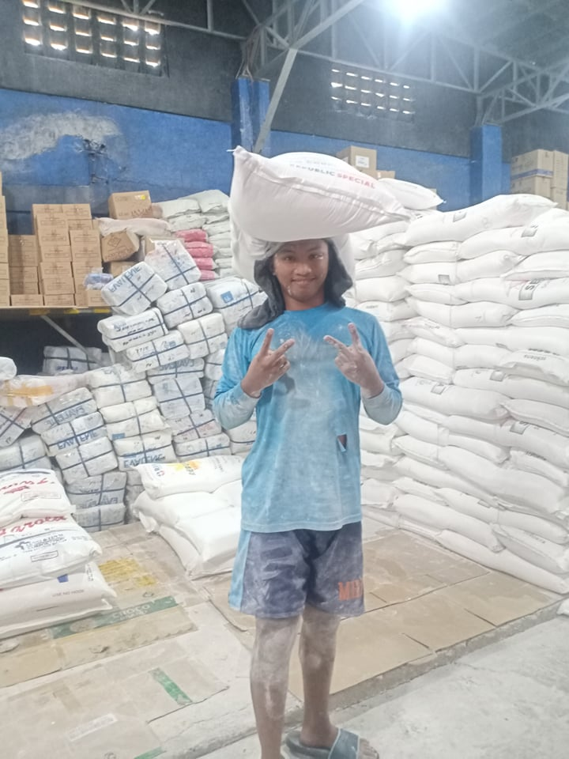
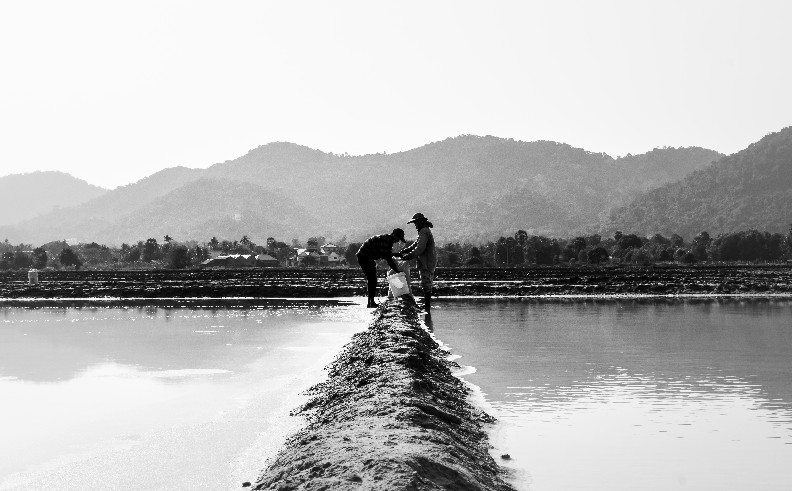

Kargador ng Harina
It's hard to be a worker or to be a porter in a business, there is a lot of flour here, there are no children, no adults, as long as you lift things that need to be lifted, our house is very far from my work and I only ride a bike, I am very weak every Saturday because I wake up at 4am because we go to work at 7am, our house is too far from here and I go home at 5pm, I can get home around 7pm so my sleep is not enough and the income here is also not enough 300 a day is very difficult so I think I would never want to come here again
Construction Worker

My first time working in construction when I was 17 years old, it was very difficult because at a young age I was lifting two cements, and sand, gravel and many other things, here your boss will treat you like a dog and you will not eat if you don't it's break time, your only rest is break time and when you urinate it's very difficult because the bosses reason is that we are paid for the time we work, it's already sunny and there's no break so I hope I can't come back here during the time you're locked up in being a worker
Farmer
I am also a farmer because my father is also a farmer, as a child I am already used to these kinds of lifestyles, I am content with eating three meals a day and I also experience the hardships in the field on how to plant rice and how it will be rice thanks to GOD for the experiences I had